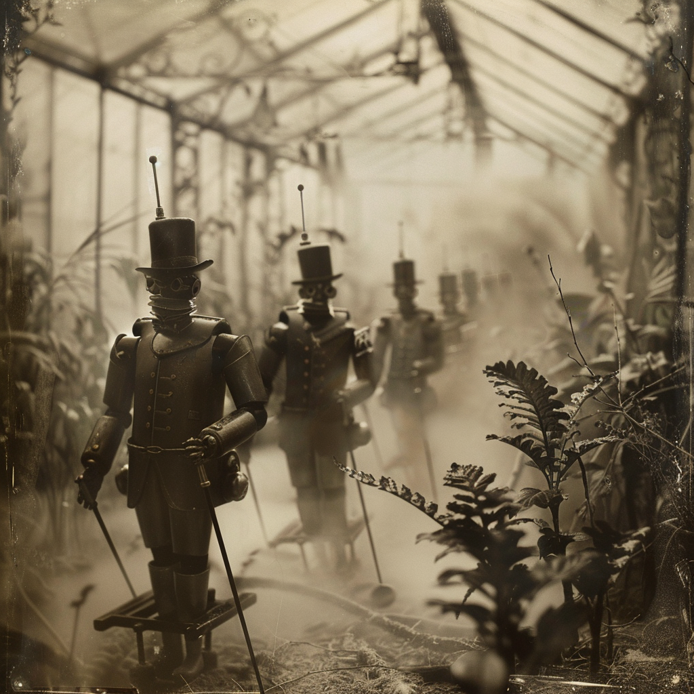

Orangerie
10 International Awards
— Magikal Charm Experimental Video & Film Fest

This 7.5-minute experimental video unfolds within a derelict Victorian greenhouse, presenting a non-linear narrative that interweaves past, present, and future. The film combines AI-generated scenes, camera movements, sound effects, and music into a kinetic, fractured dreamscape.
The greenhouse serves as a stage hosting automatons from different eras. Humanoid figures in quasi-hazmat suits sweep the grounds with devices resembling metal detectors, while in scenes recalling a bygone era, croquet sticks appear, creating a visual parallel. These searching figures seem to be attempting to uncover the location's enigmatic history or their own automata lineage. In other scenes, mechanical children engage in hunting sequences, pursuing robotic birds through overgrown foliage. Elsewhere, humanoid robots tend to withered plants.
Visual motifs of hunting and searching recur, creating parallels across different timeframes. Imagery shifts and transforms, suggesting themes of creation, discovery, and obsolescence in a world where past, present, and future coalesce.
The video's atmosphere incorporates gothic undertones, nostalgia, and surrealism, with elements of the absurd and macabre. It touches on concepts of decay, memory, and the fluidity of time, as indicated by the weathered greenhouse and the automata's anachronistic activities.
Created without traditional filming equipment, the project uses AI tools, including Runway ML (2.5), Magnific, Krea, Luma Labs: Dream Machine, Midjourney, and Eleven Labs, Suno AI. The resulting composition of fractured visuals and atmospheric soundscapes explores ideas about consciousness, the search for origins, and the cyclical nature of time in a reality where time seems to fold in on itself.

Director's Statement
"Orangerie" is an experiment in storytelling and artistic exploration, expanding my practice from visual art into filmmaking through the use of generative AI. Set in a derelict Victorian greenhouse, the film unfolds as a fragmented, non-linear narrative that bridges past, present, and future. This setting, marked by its decayed elegance and weathered grandeur, becomes a stage for automatons from different eras to enact scenes of searching, tending, and discovery.
The film's visual language draws from both historical and futuristic references. Victorian-era automatons and contemporary robotic forms coexist in this liminal space, their movements and interactions suggesting a cyclical relationship between past and future technologies. The greenhouse, with its failing glass panels and overgrown foliage, serves as both container and catalyst for these temporal crossovers.

Through the use of AI, I've been able to create imagery that exists in a space between the real and the artificial, mirroring the film's themes of technological evolution and the blurring of boundaries between the organic and the mechanical. The AI's interpretation of Victorian aesthetics and futuristic elements has resulted in a unique visual hybrid that feels both familiar and otherworldly.
The recurring motifs of searching and tending throughout the film speak to humanity's persistent desire to understand and control our environment, while simultaneously highlighting the futility of such efforts in the face of inevitable decay and transformation. The automatons' activities—whether they're sweeping the grounds with mysterious devices or caring for withered plants—become a meditation on purpose and persistence in an environment that's slowly being reclaimed by nature.
Sound plays a crucial role in the film, with a score that weaves together mechanical rhythms, ethereal drones, and processed environmental recordings. These sonic elements help to establish the temporal ambiguity of the space while reinforcing the emotional resonance of the visuals.

The decision to present the narrative in a non-linear fashion reflects the way memory and time operate in this space—moments overlap, repeat, and transform, creating a dreamlike atmosphere where past and future are in constant dialogue. This approach allows viewers to piece together their own understanding of the events and relationships they witness.

In creating "Orangerie," I sought to explore questions about technological progress, the nature of consciousness, and our relationship with the environments we create and abandon. The greenhouse becomes a metaphor for these concerns—a space where time is both suspended and accelerated, where the boundaries between growth and decay, progress and regression, become increasingly unclear.


Ultimately, "Orangerie" is an invitation to contemplate these intersections of time, technology, and nature—to consider how our past continues to shape our future, and how the spaces we leave behind might become stages for new forms of life and consciousness to emerge.